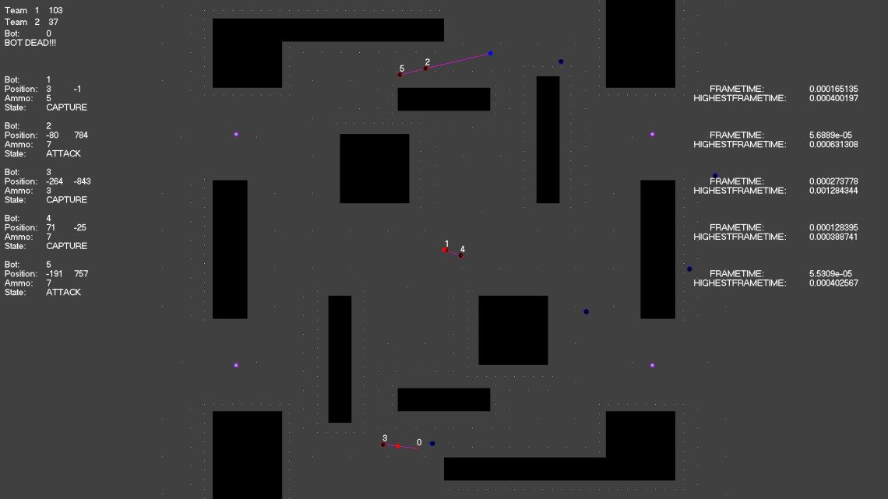

AI, Multi-Threading and Networking Bot Game
For an assignment during my degree in Computer Games Programming, I was tasked with making a game in which I had to write the AI for a team of bots to beat another team of bots with badly written AI. This was all done in C++ and within a 2D game engine created by the module tutor Chris Rook.
The game was essentially a 5 v 5 between two teams fighting over domination points. There is no end to the game, just two scores which explain which team had the better AI. Everything was already created before starting the AI such as the map, where the domination points were, the teams and the various rules which needed to be followed. All there was left to do was write a AI which could beat the enemies teams premade AI.
The AI was split into two different sections; the generation of a navmesh in which the bots could use the navmesh to work out how to get from point A to point B, and then the making of the bots core AI which told the bot when to find a domination point, when to retreat and get ammo, and when to attack.
To start with, since the map was premade by Chris, all there was to do was to generate a navmesh. The navmesh was made by passing a rectangle into a function which partitions the rectangle into 4 smaller rectangles if the original rectangle is overlapping an obstacle. If the rectangle either doesn’t overlap and obstacle or gets too small, a node is placed and saved into a list of nodes.
Then once all the nodes are placed, edges are created between nodes which can see each other in which paths are made which can reach each other. By doing this, a network of paths is then created and the bots finally have a navmesh which can be traversed. This navmesh can then be used within the A* path-finding algorithm later.
The second part of the bots AI was then started once the map had been made, and that began with behaviours. These behaviours were actions which the bots could do; seek, flee, arrive, evade, pursue, path find and wall evade. The first five were more advanced and were turned on in specific moments during the path find behaviour (when following points in a path, the bot would seek the next node, when arriving at the last point in a path, it would use the arrive behaviour). The wall avoid behaviour was essentially turned on at all times to make sure a bot would not get stuck on a wall.
The most advanced behaviour of these would be the path finding behaviour, in which a path is followed using the seek and arrive behaviours. However for this to work, a path must be found first. Using the navmesh which was made before, an A* algorithm is used to find the shortest path from A to B given two coordinates.
After this, a function was made which combined all of the different behaviours to make one acceleration vector which the bot used given whichever behaviour is being used at that current time. An easy explanation of this would be that the bot is heading towards a goal, but a wall is in the way. So the acceleration of the seek is added to the acceleration of the wall avoid. In doing so, the bot would still head towards the goal, even if the bot had to slightly turn away from a wall to avoid hitting it.
Next to make use of these behaviours, different states was made. A state within the program would in the end give a bot a specific task. In this case, three states was made; capture in which a bot will go and find a domination point and capture it, attack in which an enemy is close and the bot will fight the enemy, and reload in which a bot will go find a reload point and restock on ammo. With this done, the bots were complete and could win in a game. However more could be done to improve the program.
Multi-Threading is the idea that a task within a program or application would run a process off the main thread the program runs on an multitasks calculations. This is massively useful in terms of making sure a program is still responsive whilst working out a huge problem or loading a big file (no one wants a program which freezes and becomes unresponsive for a few seconds as it is unprofessional).
This was implemented into the program after finding out that the program would stutter whenever a bot needed to do some path finding. With the A* algorithm looping through hundreds of nodes within the game, it can take a lot of processing power and freeze the game slightly. This was proven by recording the update times, and the first update in the game finding 5 different paths in one update cycle (due to having 5 bots per team) was found to be quite large compared to an average frame. Therefore, it was made so whenever a path was to be worked out with the A* algorithm, it would be done on a separate thread and the bot would wait until the path was then found. This fixed any stutters within the program, and especially within the start of the game. The first frame then returned back to an average frame time and any stutters were completely eliminated. Adding more bots to each team even showed that it had fixed the problem as even with 100 bots finding a path, no pauses or stutters was shown as it were previously even with just 5 bots.
The other improvement made within the game was the use of networking. Despite the game only being two teams of bots and not two human players, it was still done. The game was made so that one computer running the game could act as the host, and another computer running the game could act as the client and connect to the host. The host would then send over all the bots position data, ammo and when the bot was shooting so then everything which happened on the host computer would occur on the client computer. This was all done through bit packing showed how a client on any game could spectate another game with just basic information.
After the two improvements was done, the game was then finished complete with a working AI which used A* path finding and states, multi-threading and networking. As a year long project, a lot was learnt in undertaking this project including how A*, multi threading and networking all work.
A link to the project can be found here on GitHub: link